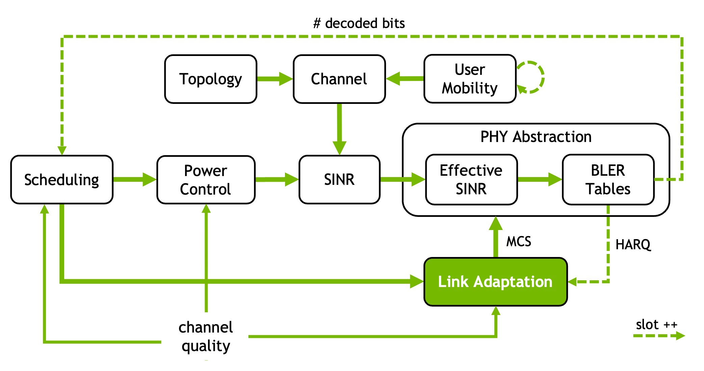

Link Adaptation#
{kind=link}

Link adaptation (LA) optimizes the performance of a single wireless link by dynamically adjusting transmission parameters to match time-varying channel conditions.
The objective is to maximize the achieved throughput while maintaining the transport block error rate (TBLER) sufficiently low. Typically, this is simplified to maintaining the TBLER close to a predefined target, designed to balance throughput and latency.
The main challenge lies in handling noisy and sparse SINR feedback, which is used to estimate the channel quality.
For a usage example of link adaptation in Sionna, we refer to the Link Adaptation notebook.
|
Inner loop link adaptation (ILLA). |
|
Outer-loop link adaptation (OLLA). |
Note#
The concepts of MCS table index, category, code block and transport blocks are inspired by but not necessarily tied to 3GPP standards. It is assumed that:
Each MCS category has multiple table indices, each defining the mapping between MCS indices and their corresponding modulation orders and coding rates. Such relationships are defined by
mcs_decoder_fun;The transport block, which serves as main data unit, is divided into multiple code blocks. The number and size of these code blocks are computed by
transport_block_fun.
Yet, if neither sinr_effective_fun nor transport_block_fun is provided,
this class aligns with 3GPP TS 38.214 ([3GPPTS38214]),
specifically Section 5.1.3 (PUSCH) and Section 6.1.4 (PDSCH).
In this case, the MCS category refers to PDSCH (category = 1) and PUSCH (0).
Valid MCS table indices for the MCS decoder and built-in BLER tables are
{1, 2} for PUSCH and {1, 2, 3, 4} for PDSCH. The default EESM beta parameters
cover indices {1, 2} only; using PDSCH tables 3 or 4 through the SINR path
requires a custom beta table, or bypassing EESM by passing sinr_eff and
num_allocated_re directly to PHYAbstraction.
For more information, refer to TBConfig.